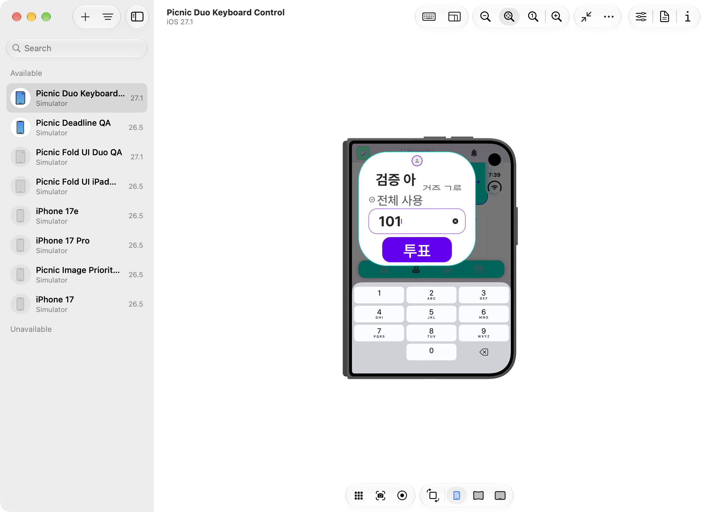
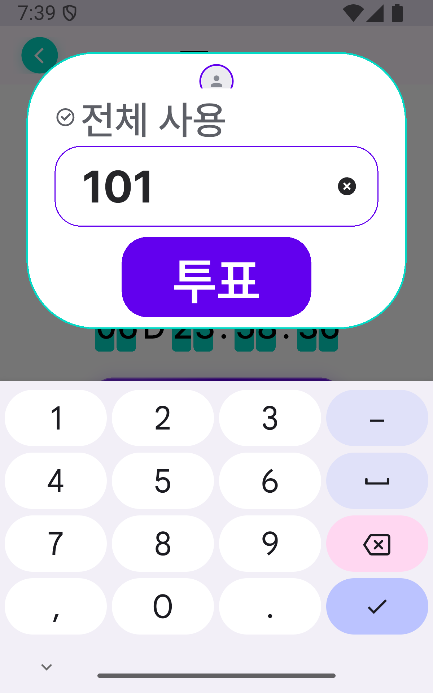
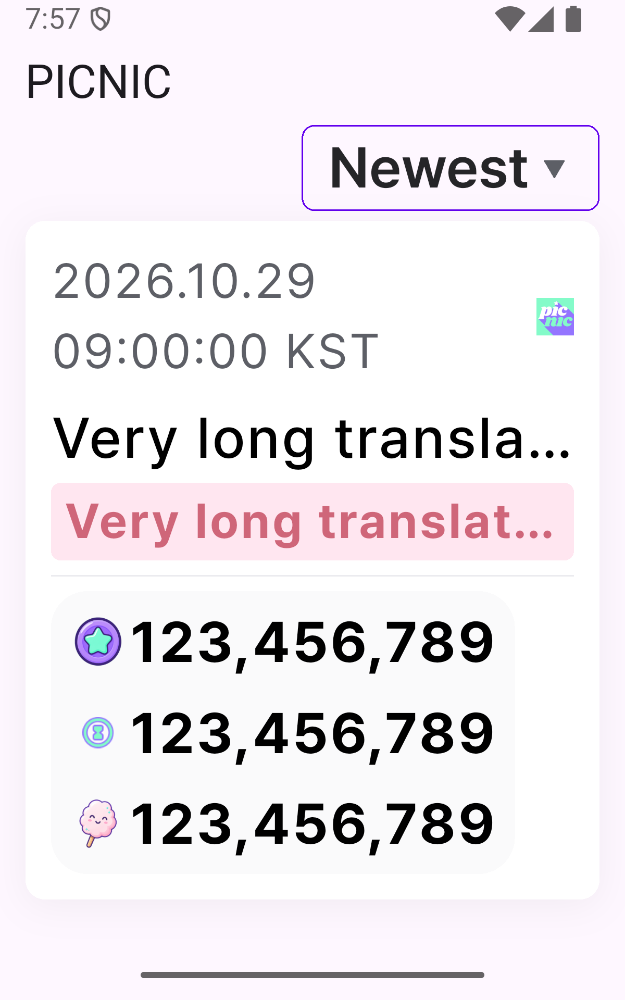
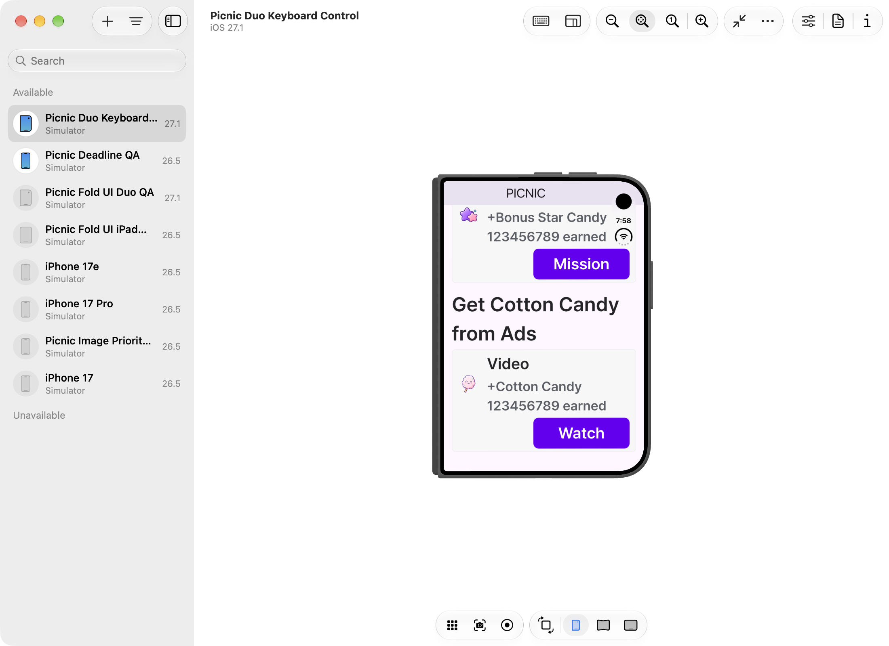
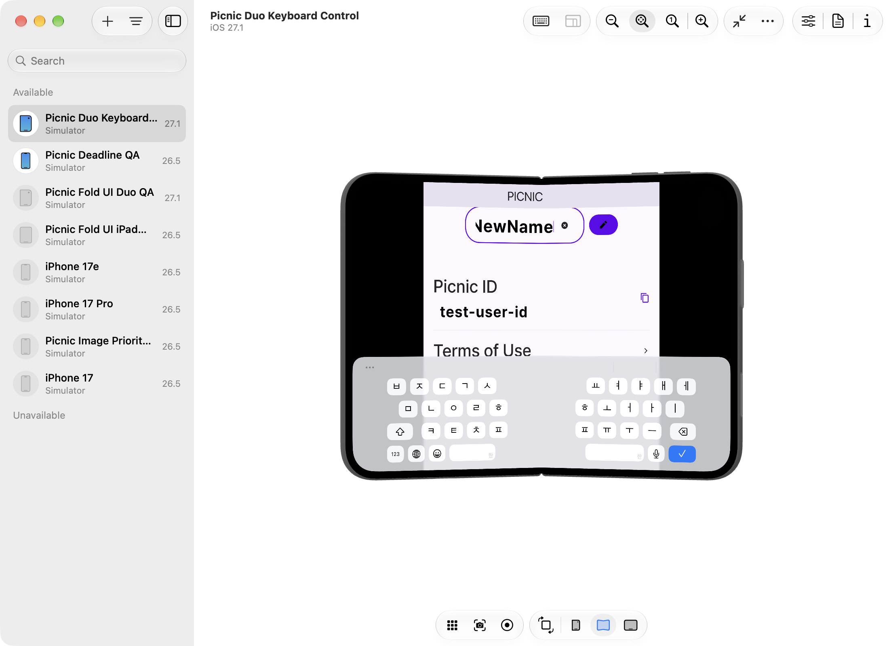
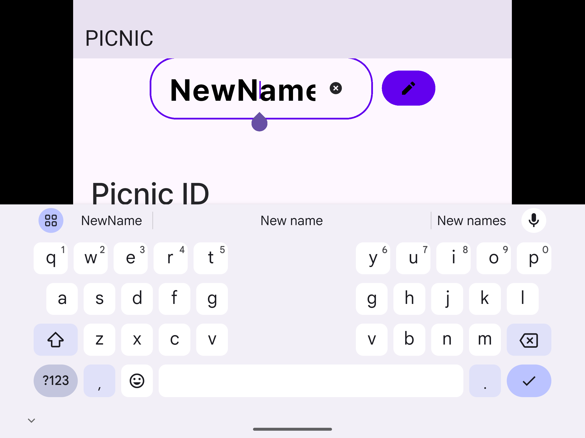
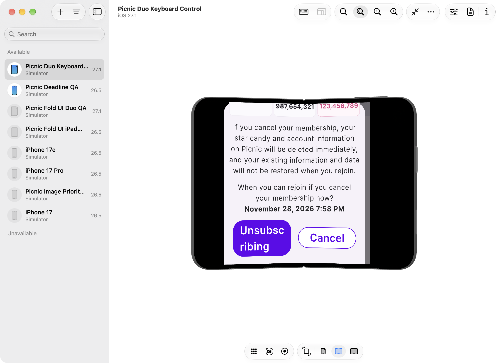
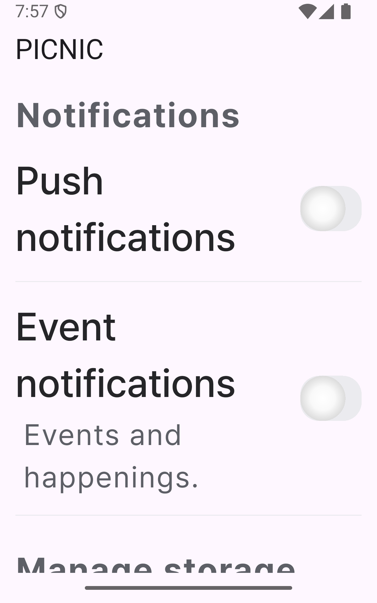

기준 커밋 55165348a · 기존 한 열·최대 폭 600·글자 배율 상한 2.6 유지. 커뮤니티·댓글 제외.
추가 점검에서 날짜·금액 넘침, 로딩 중 버튼 이동, 작은 아이콘 조작 영역과 큰 글씨의 확인창 문제를 재현하고 수정했다. 아래 표는 위젯 직접 실행과 실제 앱 이동 검증을 구분한다.
오버플로·예외가 없어야 한다. 입력값과 선택값은 창 크기 변경 후 유지되어야 한다. 조작 버튼은 스크롤로 접근 가능해야 한다. 키보드가 닫힌 경우 실제 입력란 재탭으로 편집을 재개할 수 있어야 한다. 테스트가 직접 띄운 화면과 실제 메뉴 경로를 구분한다.
| 화면 | 재현한 문제 / 조치 | 근거 |
|---|---|---|
| 투표 내역 | 날짜와 9자리 사용량이 좁은 화면에서 넘쳤다. 날짜 폭을 제한하고 통화별 사용량을 다음 줄로 배치한다. | 320px·글자 260%에서 날짜 147px, 사용량 581px 넘침 재현. 수정 후 행렬 통과. |
| 재화 내역 | 긴 차감량이 넘쳤다. 유형과 금액을 가용 폭에 따라 다음 줄로 배치한다. | 320px·260%에서 52px 넘침 재현. 통화 탭 전환도 검증. |
| 무료 충전소 | 로딩 문구가 길어질 때 버튼 위치가 바뀌었다. 일반·로딩 문구 중 넓은 폭을 예약한다. | 카드 높이 78.6→109/126px 변화를 재현. 수정 후 320×600·600×400, 글자 100%·260%, 3개 언어에서 버튼 좌표와 카드 크기 동일. |
| 프로필 | 저장·입력 지우기·사진 변경에 이름과 최소 48px 조작 영역을 적용했다. | ko/en/es에서 tooltip과 크기 확인. 입력 지우기 실행. 초점 이동 시 높이 48→50.44px 변화도 재현해 최소 높이 예약으로 해결. 사진·저장은 실행하지 않음. |
| 알림 설정 | 작은 스위치를 48px 높이로 조정하고 접근성 이름·켜짐 상태를 제공한다. | 실제 Semantics 트리의 단일 이름·켜짐 상태·tap 동작으로 전환 확인. OS 화면 읽기 실제 음성 검증은 아님. |
| 탈퇴 확인창 | 큰 글씨에서 하단이 793~1,726px 넘쳤다. 안전 영역과 스크롤을 적용해 취소 버튼에 접근한다. | ko/en/es 320×600·600×400·800×600, 260%에서 열기→스크롤→취소 통과. 기존 중복 요청·진행 중 이탈 차단 회귀 6개 포함. |
| 지갑 오류 | 영어·스페인어 재시도 문구가 67/319px 넘쳤다. 버튼 문구에 가용 폭을 적용한다. | 큰 글씨 오류→재시도→잔액 복구 6개 통과. |
| 검사 | 조건 | 결과 |
|---|---|---|
| 하위 화면 행렬 | 10개 화면/동작 × 320×600·800×600·600×400 × 글자 100%·260% × 한국어·영어·스페인어 | 180개 통과 |
| 조작·접근성 | 프로필 아이콘·초점 높이(1·2.6), 실제 Semantics 트리와 tap 동작, 로딩 버튼(2개 크기·2개 배율), 짧은 QnA, 탈퇴 취소(3개 크기) × 3개 언어 | 33개 통과 |
| 오류·빈 상태 | 공지·FAQ·지갑의 오류와 재시도, QnA 목록의 긴 제목·빈 상태·재시도. 320×600·600×400, 글자 260%, 3개 언어 | 30개 통과 |
| 기존 관련 회귀 | 프로필·설정·탈퇴 요청 방어·충전소·투표/재화 내역·지갑 | 84개 통과 |
| 실제 앱 이동 | Portal 메뉴와 투표 목록→상세→입력창. 6개 크기 × 2개 글자 배율. 400×640 시작의 두 경우는 800×600→600×400→400×600으로 창 크기 변경 후 입력값·선택 위치·키보드 위 위치 확인 | 24개 + 요청 감시 자체 검사 1개 통과 |
| 정적 분석 | 수정 소스·신규 테스트 | 14개 파일을 분석했다. 마지막 접근성 테스트의 사용 중단 API 경고 3개를 수정한 뒤 해당 파일 재분석에서 문제 없음을 확인했다. |
| 네이티브 투표 전환 | Duo iOS 27.1: 466×678↔951×669. Android API35: 400×640↔800×600. 두 글자 배율. | 각 2개 통과, 각 10회 전환. 그중 4회는 투표 입력 중 전환. |
| 네이티브 하위 화면 | 실제 운영 위젯을 직접 실행. 내역·충전소·설정·프로필·탈퇴 취소, 영어·글자 260%. 프로필 입력 상태에서 펼침. | 리뷰 반영 후 다시 실행해 각 1개 통과, 각 1회 추가 전환. 프로필 키보드 Duo 304→264px, Android 332→320px. 취소 후 시트 닫힘 확인. |
중복을 제외한 위젯 테스트는 352개다(180+33+30+84+25). 전체 회귀 묶음 297개 실행 뒤, 복구 테스트를 18→30개로 확장해 별도 재실행했다. 리뷰 후 조작 테스트도 15→33개로 확장했다. 변경 영향 테스트 227개를 재실행했다. 반복 실행한 사례를 중복 합산하지 않았다.
프로필과 QnA 작성 입력값은 위젯 시험의 창 크기 변경 후 유지됐다. 600×400·260%·키보드 inset 180의 QnA 제목란은 키보드와 앱바 사이에 표시됐다. 초기 읽기 전용 조사에서 제기한 제목란 가림 가능성은 이 세 언어 조건에서 재현되지 않아 QnA 코드를 수정하지 않았다.
알림함은 긴 제목·본문의 운영 위젯을 메모리 저장소와 로컬 응답으로 시험했다. 상점의 긴 가격은 운영 StoreListTile과 테스트 콜백으로 접근·탭을 확인했다. 충전소는 FreeChargeContent를 직접 실행했다. 실제 광고 SDK·보상 지급·실결제는 포함하지 않는다.
아주 좁은 창에서 긴 숫자는 다음 줄로 이어질 수 있다. 글자를 줄이거나 숫자를 말줄임하지 않는다. 모든 금액 글자의 배치 영역이 문단 안에 있고 최대 줄 수로 잘리지 않는지 행렬에서 검사했다. 설정 스위치는 시각 크기도 최소 64×48로 커졌으며 폭은 화면에 맞춰 늘어난다. 캡처에서 확인했으며 48px 조작 영역을 우선했다.
투표 시나리오는 실제 앱 이동을 사용한다. 하위 화면 시나리오는 테스트용 PICNIC 앱바 아래 운영 위젯을 직접 올린다. 메뉴→하위 화면 전체 이동의 증거로 해석하지 않는다. 키보드는 실제 OS 키보드이며 문자열은 EditableTextState.updateEditingValue로 입력 처리 경로에 전달했다. OS 키보드의 글쇠를 하나씩 누른 시험은 아니다.
투표 전환 후 값 10과 선택 위치가 유지됐다. 입력란을 다시 누른 뒤 키보드가 표시되고 값 101로 편집됐다. 프로필은 NewName과 선택 위치 3의 유지를 검사한다. 위젯 시험의 가로·세로 창 변경은 OS 센서 회전·One UI 멀티윈도 검증과 구분한다.
Duo 하위 화면 첫 실행은 스크롤 완료 전 메뉴 탭으로 실패했다. 테스트에 화면 정착과 hit test 확인을 추가했다. 앱 코드를 바꿔 실패를 숨기지 않았다.
Orca Run run_e8de96196f7d, Dispatch ctx_418b1351d4e8에서 Claude Opus 5.5/high가 읽기 전용 검토를 완료했다. Semantics 검증 부족·초점 이동 시 높이 변화·경계 조건 테스트를 보완했다. 새 제한 세션에서 1회 재검토를 완료했으며, 6개 검토 항목의 처리와 회귀 근거가 모두 수용됐다. 재검토 Dispatch는 ctx_79e10272795b이다.
이미지는 별도 PNG로 연결하고 지연 로딩한다. HTML에 큰 이미지 데이터를 내장하지 않는다. 표시된 이름·금액은 테스트 데이터다.








# picnic_lib flutter test test/presentation/layout/active_subpages_foldable_test.dart \ test/presentation/layout/active_subpages_interaction_test.dart \ test/presentation/layout/active_subpages_recovery_test.dart --no-pub # picnic_app flutter test test/current_service_foldable_test.dart --no-pub flutter test integration_test/device/current_service_foldable_device_test.dart \ -d <전용 기기 ID> --dart-define=VERIFY_FOLD_TRANSITION=true --no-pub flutter test integration_test/device/extended_subpages_device_test.dart \ -d <전용 기기 ID> --dart-define=VERIFY_FOLD_TRANSITION=true --no-pub
SERVICE_UI RESIZE 로그마다 커버·펼침 창을 바꿔야 테스트가 진행된다. Android는 OPENED 상태, density 480에서 wm size 1200x1920 / 2400x1800을 사용한다. 실제 Fold8 사양을 단정하는 값이 아니다.
HTML은 약 14KB이며 별도 PNG 8개는 합계 약 2.3MB다. 독립 Chrome 프로필에서 렌더링과 링크를 확인했다. Orca 자동 열기는 runtime_timeout으로 완료되지 않아 로컬 파일 링크로 제공한다. 공개 업로드·push·merge·배포는 수행하지 않았다.
OS 화면 읽기 도구의 실제 음성·초점 순서, 실제 Fold8 One UI·힌지·멀티윈도, 실제 계정·결제·광고·투표 서버 결과는 별도 검증이다. QnA 첨부·답변 상세·전송, 모든 언어·투표 유형, 알림의 전체 실패 경로는 이번 범위에서 검증하지 않았다. Firebase 종료 상태 알림 탭 실기기 QA도 남는다. 에뮬레이터 창 비율과 논리 크기는 시험 조건이며 실기기 사양이 아니다.